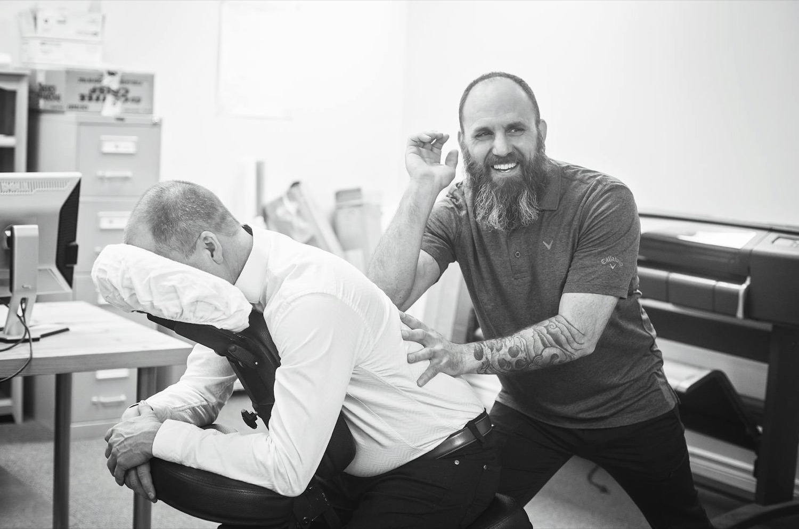

Диагностика
Первичный прием, осмотр, анамнез, консультация и план восстановления под ваше состояние.
Новосибирск - китайские и классические техники
Работа с болью, стрессом, мышечными зажимами и усталостью через диагностику, ручные техники и индивидуальный план восстановления.
Станислав обучался мануальной терапии, акупрессуре, диагностике, китайской школе массажа "Туйна" и традиционным техникам Туйна, Ци-гун, Гуаша, Туйцы.
Подход соединяет восточную практику и современное восстановление: улучшение кровообращения, снятие мышечных зажимов, работа с усталостью, стрессом и ощущением скованности.
Первичный прием, осмотр, анамнез, консультация и план восстановления под ваше состояние.
Туйна, Гуаша, мануальные, миофасциальные, спортивные, лечебные и лимфодренажные техники.
Антистрессовый, классический, массаж головы и ног, Ци-гун, расслабляющие практики.

Тишина. Чистое белье. Теплые масла. Работа без спешки.

Для офисов, команд и компаний
Сидячая работа накапливает напряжение в шее, плечах, спине и голове. Короткие сеансы массажа помогают сотрудникам снять зажимы, переключиться и вернуться к задачам спокойнее.
Услуги
Стоимость зависит от техники, длительности и задачи сеанса. Подбор - после консультации.
Туйцы, Гуаша, тайский, антистрессовый, мануальный, миофасциальный, массаж всего тела.
Интенсивная ручная работа, восстановительный и корректирующий подход.
Оздоровительный, лимфодренажный, спортивный, Юмейхо-терапия, расслабляющий массаж.
Массаж в парной для глубокого расслабления и ощущения обновления.

Мастер
Профессиональный массажист с опытом в мануальной терапии, акупрессуре и диагностике. Главный принцип - найти корень проблемы и подобрать ключ именно к вашему состоянию.
FAQ
Это ручная техника китайской школы массажа. В работе могут сочетаться Туйна, Туйцы, Гуаша, Ци-гун, миофасциальные и мануальные приемы.
Основные программы стоят от 3000 ₽. Китайский массаж - 3000-5000 ₽, антицеллюлитный - 3000-4000 ₽, мокрый массаж - 5000-7000 ₽.
Да. Для компаний доступен формат 15-30 минут: короткие регулярные сеансы для шеи, плеч, спины и восстановления после сидячей работы.
Новосибирск, Олимпия Галущака, 2а, 1 этаж. Линейный микрорайон, Заельцовский район. Прием ежедневно с 10:00 до 20:00.
Контакты
Запишитесь на прием или обсудите регулярный массаж для сотрудников вашей компании.
Как добраться